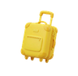

Amalfi Coast
Positano
·
24th August - 31st August
A
S
J
M
Overview
Travel
2
Stay
1
Eat
1
Exp
12
days to go
You leave Sunday morning
28° clear
7 nights · 4 going
Trip is 68% planned
Needs you
3
Clear all
Vote on Da Vincenzo
Sam added it · 2 of 4 in
No return leg yet
Outbound lands 24 Aug, 11:05
Destination
Weather and time zone
Stops
3
Parties
2

29